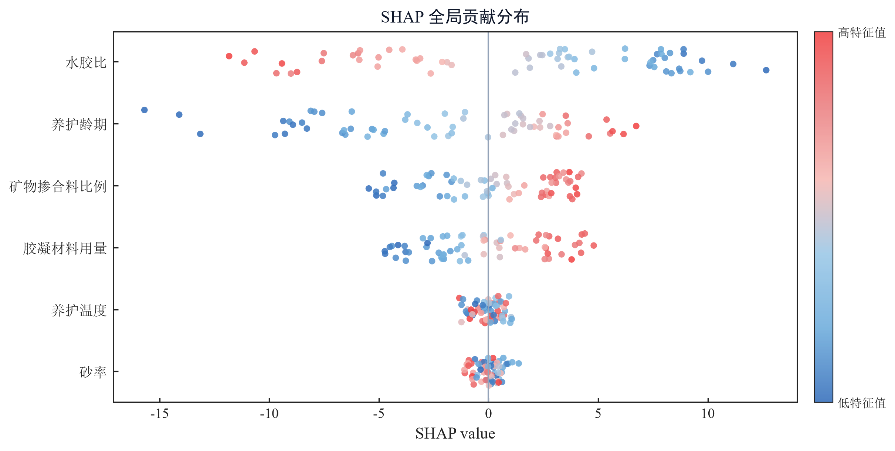

预测一个数值 回归
从特征预测连续数值，适合价格估算、需求预测、风险评分。
Random ForestXGBoostCatBoostGBRTMLP
R²RMSEMAEMSE
工作流
通过可视化界面完成建模流程。你决定预测什么、使用哪些数据，软件负责执行训练与计算。
选择 CSV / Excel 文件，在界面中查看列类型与缺失情况。
选择回归、分类、聚类或时序；监督任务还需指定目标列。
选择模型与参数，可按需启用 Optuna 超参数搜索。
点击运行，在同一个窗口查看训练日志、进度与评估结果。
查看任务对应的指标和诊断图，再按需导出实验报告。
能力
预测数值、识别类别、发现分组或预测时间序列。在界面中选择任务，模型与评估指标随之切换。
从特征预测连续数值，适合价格估算、需求预测、风险评分。
给样本打上类别，适合垃圾信息识别、诊断辅助、客户分群。
在没有标签的数据里找自然分组，适合市场细分、异常发现。
从序列数据预测后续走势，适合销量、气象、容量规划。
实验报告
用性能指标比较模型，用诊断图检查误差；对支持的任务和模型，进一步查看相关性、SHAP 与 PDP/ICE。 把指标、图表和方法说明整理进报告，便于复核与汇报。
右侧为合成示例任务实际计算的 SHAP 图，仅用于展示输出形式。

进阶扩展 · 面向开发者
日常使用内置模型无需编写代码。需要接入自定义算法时，开发者可通过插件适配模型与搜索策略。
model.py 提供适配器，tuner.py 提供搜索策略requirements.txt 单独安装，不污染主环境plugin.json 声明任务类型、参数空间与入口已内置 PINN 等自定义模型的接入样例。
{
"schema_version": "1.0",
"id": "acme.random-forest",
"name": "ACME Random Forest",
"version": "1.0.0",
"type": "model",
"task_types": ["regression", "classification"],
"entrypoint": "model:ModelPlugin",
"parameters": {
"n_estimators": { "type": "int", "low": 100, "high": 1000 },
"max_depth": { "type": "int", "low": 2, "high": 32 }
}
}桌面端
安装桌面版，通过界面完成建模。模型训练与图表计算在本机执行，可选 AI 服务按配置连接。
导入的数据用于本机训练与图表计算，无需上传到云端训练平台。
已安装的本地模型与依赖可在离线环境下训练；云端 AI 解读需要联网。
保存任务配置与实验记录，方便回看、调整参数和重新运行。
按使用习惯切换浅色或深色界面。
支持中文与 English 界面，便于不同语言习惯的用户使用。
按需配置模型服务辅助理解结果；启用云端服务时，会发送所选分析内容。